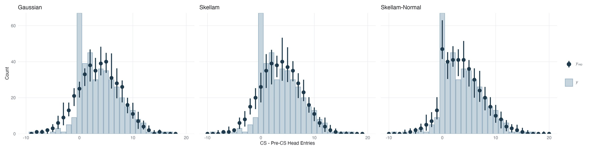

Modelling overdispersed count differences
Modelling problem
The primary measure from my publication (Peart et al., 2024, Hormones and Behavior) consisted of differenced overdispersed counts. Performance of rats on an occasion setting task was measured by subtracting the head entry count into a reward site prior to the onset of a conditioned stimulus from the count during the conditioned stimulus. I, like many other behavioural neuroscientists, used ANOVA to measure differences in this measure between selected doses of a drug occasion setter.
There is a reason ANOVA is used for this task — the resulting distribution can often be approximated by a Gaussian likelihood function, and ANOVA offers reasonable resistance to error in the face of this approximation. But we can do better. ANOVA cannot describe the generation of discrete, heteroskedastic, skewed, heavy-tailed data. For this problem, we can turn to Stan.
One solution
One reasonable method of approaching this problem is using the Skellam distribution — the distribution of differences between Poisson counts (Skellam, 1946). Tools exist natively in Stan for implementation of the log of the special function required to evaluate this likelihood function, and it has been expressed in a mean–variance formulation that can support regression (Koopman, Lit & Lucas, 2017). But the restriction of σ² = λ1 + λ2 is prohibitive of the flexibility required for our use case. Like the implementation of the Poisson-lognormal distribution before it (Bulmer, 1974), we can implement the Skellam-normal distribution to loosen this restriction in Stan.
// the mean-variance form: mu is the mean, phi the variance. note that both // logarithms require phi > abs(mu) — the next section is about that. // log_bessel arrives precomputed; see below. functions { real skellam_lpmf(int y, real mu, real phi, real log_bessel) { return -phi + (log(phi + mu) - log(phi - mu)) * y / 2 + log_bessel; } // the two Poisson rates, recovered from the mean and the variance int skellam_rng(real mu, real phi) { return poisson_rng((phi + mu) / 2) - poisson_rng((phi - mu) / 2); } }
Skellam, J. G. (1946). The frequency distribution of the difference between two Poisson variates belonging to different populations. Journal of the Royal Statistical Society, 109, 296.
Koopman, S. J., Lit, R., & Lucas, A. (2017). Intraday stochastic volatility in discrete price changes: the dynamic Skellam model. Journal of the American Statistical Association, 112(520), 1490–1503.
Bulmer, M. G. (1974). On fitting the Poisson lognormal distribution to species-abundance data. Biometrics, 30, 101–110.
Implementation
There is a restriction we need to handle in the mean-parameterized Skellam likelihood function — the variance must be greater than the absolute value of the mean. It is tempting to simply sample our variance parameter with a lower bound of the absolute value of the sampled mean, but the Stan developers warn us that this decision creates a gradient discontinuity with potential to severely degrade sampling performance. Instead, we can sample a new parameter, delta, which we define as double the geometric mean of the two Poisson rates, and transform this parameter into the appropriately constrained variance of the Skellam distribution by adding its square to the squared mean and taking the square root of the sum.
// phi is the variance, constrained above the absolute mean by construction. // regression coefficients and subject effects are omitted here for brevity. parameters { vector[N] mu; // one latent mean per observation real<lower=0> sigma; // spread of the latent normal real<lower=0> delta; // twice the geometric mean of the two Poisson rates ... } transformed parameters { array[N] real<lower=0> phi; for (n in 1:N) phi[n] = sqrt(square(mu[n]) + square(delta)); }
Conveniently, this parameterization permits the evaluation of the log modified Bessel function of the first kind in terms of an absolute count difference and delta. We can optimize our model to perform this expensive computation once per step in the range of absolute Y using a cache-and-lookup approach, rather than once per observation — here, 18 evaluations per gradient instead of 397.
// phi^2 - mu^2 = delta^2, so the Bessel argument no longer varies with the // observation. it depends on the data only through the order abs(y). transformed data { array[N] int abs_Y; for (n in 1:N) abs_Y[n] = abs(Y[n]); int max_Y = max(abs_Y); } model { vector[max_Y + 1] log_I; // cached once per gradient for (i in 0:max_Y) log_I[i + 1] = log_modified_bessel_first_kind(i, delta); for (n in 1:N) { mu[n] ~ normal(theta[n], sigma); // the latent normal target += skellam_lpmf(Y[n] | mu[n], phi[n], log_I[abs_Y[n] + 1]); } }
Does it work?
We should simulate data from the posteriors from each likelihood to see if our prediction that the Skellam-normal mixture is a superior description of the data-generating process is correct. We draw from both the latent normal and the Skellam distribution to produce replicates of the sample. In the case of the Gaussian model, these draws are discretized by continuity correction to permit a coherent comparison to the Skellam and Skellam-normal draws.
generated quantities {
array[N] real mu_rep;
array[N] int y_rep;
for (n in 1:N) {
mu_rep[n] = normal_rng(theta[n], sigma);
y_rep[n] = skellam_rng(mu_rep[n], sqrt(square(mu_rep[n]) + square(delta)));
}
}

As predicted, the Gaussian likelihood function is unable to capture the skew or the discreteness of the response variable, and the Skellam — which has both — is unable to capture its dispersion. The Skellam-normal mixture handles these characteristics reasonably well.
Limitations
One area where even the Skellam-normal struggles is predicting zeros in the response. But it seems that the abundance of zeros in the response variable are structural: 17% of differenced counts are zero, and 87% of zeros are pairs of null counts. And 66% of those occur when animals should not be expecting to receive a reward! We can easily extend the current specification to handle these zeros with zero inflation, and we might even do well to include a linear predictor of drug dose on the parameter holding the proportion of zeros drawn.
It should also be noted here that at the default sampler settings, 1–3 divergences occurred, and these divergences could not be resolved using alternative parameterizations, including non-centred parameterization of the latent normal. Adjusting adapt_delta from .8 to .9 removed these divergences across several runs on alternate seeds.
Code
Please find the full R and Stan files used for this analysis on GitHub.